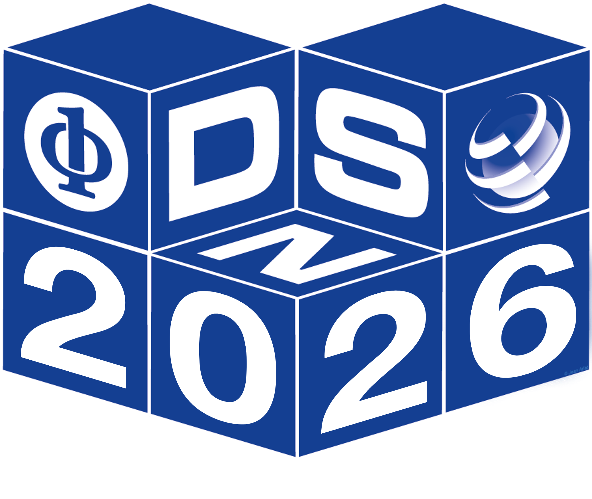

DSML 2026
|
 |
|||||||||
Topics of Interest
|
||||||||||
Important Dates (Tentative)
|
||||||||||
SubmissionsDSML welcomes both research papers reporting results from mature work, and more speculative papers describing new ideas with preliminary exploratory work. Papers reporting industry experiences, case studies, and datasets will also be encouraged. This year, we are also soliciting proposals for research talks based on work previously published elsewhere (reference to previous work is required). We strongly encourage these research talks to also include new ideas and provocative opinions and not just summarize previous work that is already published. Specifically, we accept submissions in the following formats:
We will use a double-blind review process only for the regular research papers, so the authors must anonymize their submissions. The first page must include the title of the paper, but no information on authors names and affiliations. Research talks need not be anonymized. Submission site: https://easychair.org/my2/conference?conf=dsn_2026 Make a new submission and select DSML 2026: Dependable and Secure Machine Learning All submitted manuscripts will be peer-reviewed by the program committee. Papers will be accepted and included in the workshop program according to the following criteria: relevance of the addressed topic to the scope of the workshop; novelty and value of the proposed contribution; scientific merit; quality of the writing, presentation accuracy and style. ProceedingsAuthors of regular papers can select either of the following options for the publication of their accepted papers:(1) Paper will appear in the supplementary DSN proceedings (archived in the IEEE Digital library), with the same page limit constraints as specified above, (2) Only an extended abstract (up to 2 pages + 3 pages for references and supplementary material) of the paper will be included in the supplementary DSN proceedings, but the authors are required to post a full version of the paper on arxiv that will be linked from the workshop website. |